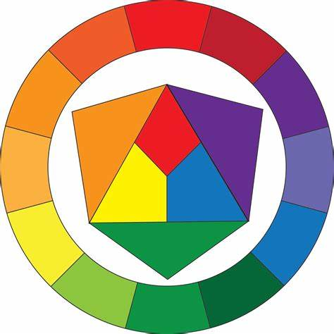
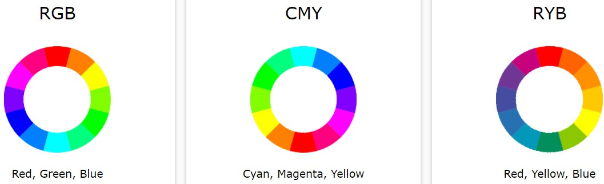
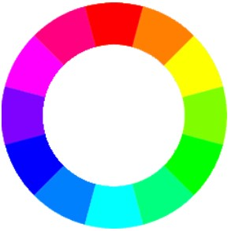
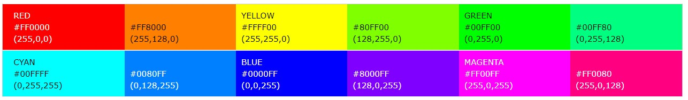
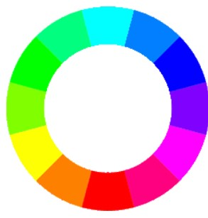
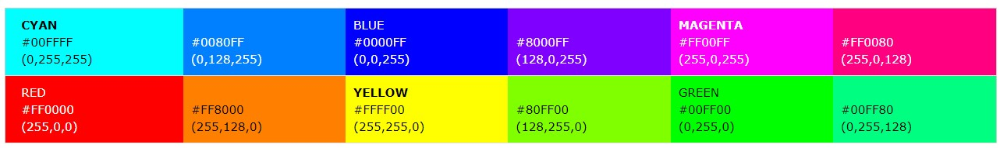
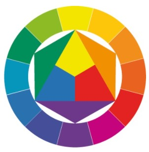
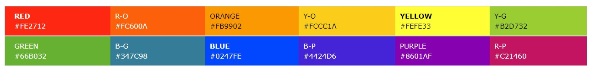

چرخ رنگ، نمایش رنگ ها حول یک دایره است که ارتباط بین رنگ های اولیه ثانویه و ثالثیه را نشان می دهد.

عکس زیر نمایش چرخ رنگ های مهم است.

چرخ رنگ RGB
این چرخ رنگ از 3 منبع نور برای تولید رنگ در کامپیوترها و تلویزیون ها استفاده می کن.
رنگ های اولیه قرمز، آبی و سبز هستند که از ترکیب آنها رنگ های ثانویه تولید می شوند.
رنگ های ثانویه:
قرمز+سبز=زرد
سبز+آبی=یشمی
آبی+قرمز=ارغوانی

12 رنگ اصلی RGB به قرار شکل ذیل است:

چرخ رنگ CMYK
این چرخ رنگ نمایانگر رنگ های است که بر روی کاغذ چاپ می شوند.
رنگ های اولیه یشمی، ارغوانی و زرد هستند.
رنگ های ثانویه از ترکیب سه رنگ فوق تولید می شوند:
یشمی+ارغوانی=آبی
ارغوانی+زرد=قرمز
زرد+یشمی=سبز

12رنگ اصلی CMYK به قرار شکل زیر است:

چرخ رنگ RYB
این چرخ رنگ از رنگ های زرد، قرمز و آبی تشکیل شده است.
در رنگ مایه های هنری، طراحی و آرت از آنها استفاده می شود. همچنین در پرینترها نیز کاربرد دارند.

رنگ های ثانویه از ترکیب 3 رنگ فوق تولید می شوند:
قرمز+زرد=نارنجی
زرد+آبی=سبز
آبی+قرمز=بنفش
12رنگ اصلی این فرمت به قرار شکل ذیل است:
